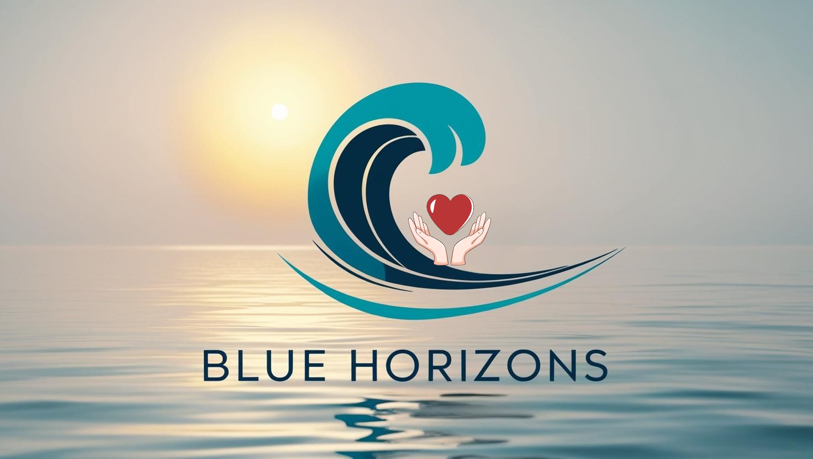

Mavi Ufuklar Projesi, su kaynaklarının korunması ve iklim değişikliğine karşı farkındalık oluşturmayı amaçlamaktadır. Eğitimler, deneyler ve sanat etkinlikleriyle çevresel sürdürülebilirliğe katkı sağlıyoruz.

Yerel kuruluşlar ve STK'ların işbirliği ile su tasarrufu eğitimleri düzenliyoruz.

Yerel su kaynaklarını inceleyerek farkındalık raporları hazırlıyoruz.

Efteni Gölü'nde filtre sistemleriyle su temizleme çalışmaları yapıyoruz.
Su temalı duvar resimleri ve sergiler düzenliyoruz.
Proje Koordinatörü

İletişim Sorumlusu

Sanat Koordinatörü

Teknik Destek ve Bilişim Koordinatörü

eTwinning Koordinatörü

Bilimsel Araştırmalar ve Atölyeler Koordinatörü

Proje Müzikleri Koordinatörü-Koro Şefi
Proje Ekibi Öğrenci Temsilcisi